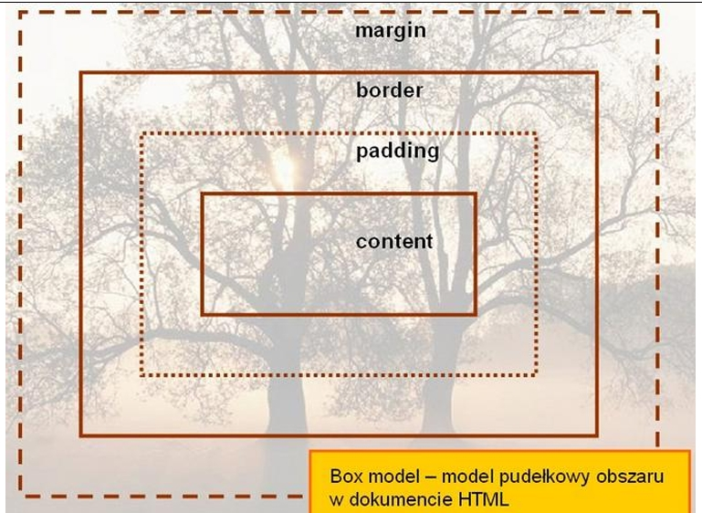
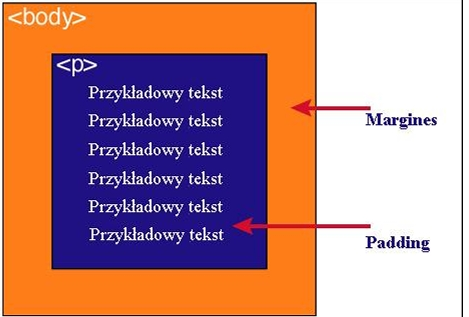

Kod HTML
<html> <head> <meta http-equiv="Content-Type" content="text/html; charset=utf-8"> <title>Kurowska</title> </head> <body> <h1>Podaj definicję modelu pudełkowego.</h1> <p>Każdy element w dokumencie HTML, otacza się prostokątnym obszarem zwanym pudełkiem (ang. Box model). Pudełko składa się z kilku warstw: </p> <h1>Wykonaj oraz uzupełnij tabelę: </h1> <table border="2"> <tr> <td> <p><b>Zawartość</b></p> </td> <td> <p><b>Opis</b></p> </td> </tr> <tr> <td><p>content</p></td> <td><p>zawartość elementu (np.: tekst, obrazek) </p></td> </tr> <tr> <td><p>padding</p></td> <td><p>otaczające marginesy wewnętrzne, odstęp między obramowaniem i zawartością elementu </p></td> </tr> <tr> <td><p>border</p></td> <td><p>obramowania wokół zawartości elementu, ma styl i kolor.</p></td> </tr> <tr> <td><p>margin</p></td> <td><p>marginesy wokół ramki (margines zewnętrzny). Jest to pusty obszar wokół ramki, który nie ma koloru tła i jest przeźroczysty. </p></td> </tr> </table> <h1>Podaj dwie uwagi na temat modelu pudełkowego. </h1> <p>1)Padding, border i margin mogą mieć zerową wartość. </p> <p>2)Tło elementu jest określone dla wszystkich z podanych powyżej obszarów z wyjątkiem marginesów zewnętrznych, które zawsze są przezroczyste (transparent). </p> <h1>Wstaw grafikę obrazującą model pudełkowy. </h1> <p></p> <h1>Wstaw grafikę obrazującą różnicę pomiędzy paddingiem i marginesem wraz z opisem. </h1> <p></p> <p>Padding określa przestrzeń wokół danego elementu, np: <p> lub >div>, natomiast margines przestrzeń pomiędzy elementami.</p> </body> </html> <!-- Ksenia Kurowska -->